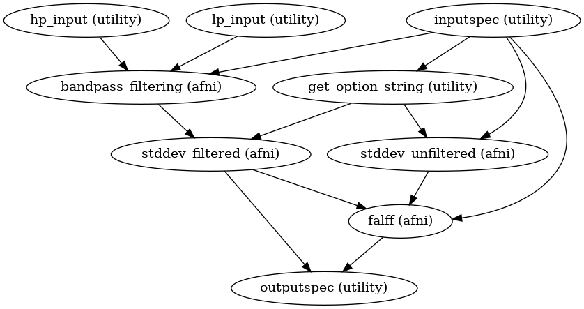
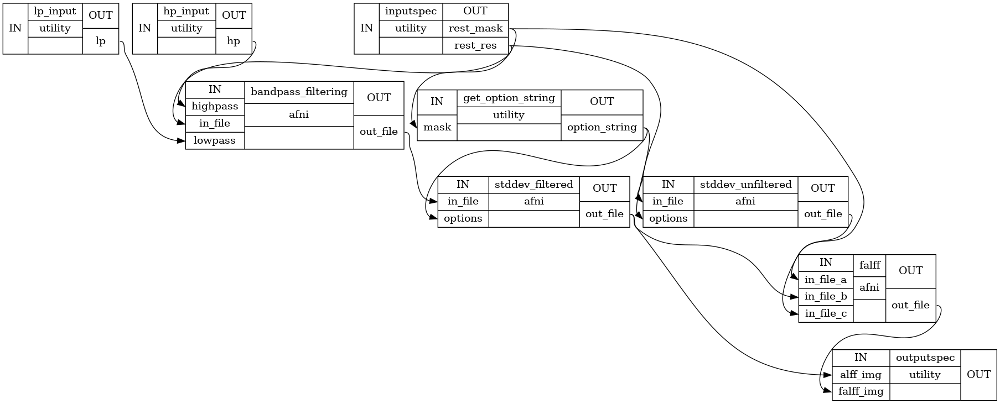

Amplitude of Low Frequency Fluctuations(ALFF) and fractional ALFF#
- CPAC.alff.alff.alff_falff(wf, cfg, strat_pool, pipe_num, opt=None)[source]#
Node Block:
{"name": "alff_falff", "config": ["amplitude_low_frequency_fluctuation"], "switch": ["run"], "option_key": "None", "option_val": "None", "inputs": [(["desc-denoisedNofilt_bold", "desc-preproc_bold"], "space-bold_desc-brain_mask")], "outputs": ["alff", "falff"]}
- CPAC.alff.alff.alff_falff_space_template(wf, cfg, strat_pool, pipe_num, opt=None)[source]#
Node Block:
{"name": "alff_falff_space_template", "config": ["amplitude_low_frequency_fluctuation"], "switch": ["run"], "option_key": "None", "option_val": "None", "inputs": [(["space-template_res-derivative_desc-denoisedNofilt_bold", "space-template_res-derivative_desc-preproc_bold"], "space-template_res-derivative_desc-bold_mask")], "outputs": ["space-template_alff", "space-template_falff"]}
- CPAC.alff.alff.create_alff(wf_name='alff_workflow')[source]#
Calculate Amplitude of low frequency oscillations (ALFF) and fractional ALFF maps
- Parameters
wf_name (string) – Workflow name
- Returns
alff_workflow – ALFF workflow
- Return type
workflow object
Notes
Workflow Inputs:
hp_input.hp : list of float high pass frequencies lp_input.lp : list of float low pass frequencies inputspec.rest_res : string Path to existing Nifti file. Nuisance signal regressed functional image. inputspec.rest_mask : string Path to existing Nifti file. A mask volume(derived by dilating the motion corrected functional volume) in native space
Workflow Outputs:
outputspec.alff_img : string Path to Nifti file. Image containing the sum of the amplitudes in the low frequency band outputspec.falff_img : string Path to Nifti file. Image containing the sum of the amplitudes in the low frequency band divided by the amplitude of the total frequency outputspec.alff_Z_img : string Path to Nifti file. Image containing Normalized ALFF Z scores across full brain in native space outputspec.falff_Z_img : string Path to Nifti file. Image containing Normalized fALFF Z scores across full brain in native space
Order of Commands:
- Filter the input file rest file( slice-time, motion corrected and nuisance regressed) ::
- 3dBandpass -prefix residual_filtered.nii.gz
0.009 0.08 residual.nii.gz
- Calculate ALFF by taking the standard deviation of the filtered file ::
- 3dTstat -stdev
-mask rest_mask.nii.gz -prefix residual_filtered_3dT.nii.gz residual_filtered.nii.gz
- Calculate the standard deviation of the unfiltered file ::
- 3dTstat -stdev
-mask rest_mask.nii.gz -prefix residual_3dT.nii.gz residual.nii.gz
- Calculate fALFF ::
- 3dcalc -a rest_mask.nii.gz
-b residual_filtered_3dT.nii.gz -c residual_3dT.nii.gz -expr ‘(1.0*bool(a))*((1.0*b)/(1.0*c))’ -float
Normalize ALFF/fALFF to Z-score across full brain
fslstats ALFF.nii.gz -k rest_mask.nii.gz -m > mean_ALFF.txt ; mean=$( cat mean_ALFF.txt ) fslstats ALFF.nii.gz -k rest_mask.nii.gz -s > std_ALFF.txt ; std=$( cat std_ALFF.txt ) fslmaths ALFF.nii.gz -sub ${mean} -div ${std} -mas rest_mask.nii.gz ALFF_Z.nii.gz fslstats fALFF.nii.gz -k rest_mask.nii.gz -m > mean_fALFF.txt ; mean=$( cat mean_fALFF.txt ) fslstats fALFF.nii.gz -k rest_mask.nii.gz -s > std_fALFF.txt std=$( cat std_fALFF.txt ) fslmaths fALFF.nii.gz -sub ${mean} -div ${std} -mas rest_mask.nii.gz fALFF_Z.nii.gz
High Level Workflow Graph:
Detailed Workflow Graph:
References
- 1
Zou, Q.-H., Zhu, C.-Z., Yang, Y., Zuo, X.-N., Long, X.-Y., Cao, Q.-J., Wang, Y.-F., et al. (2008). An improved approach to detection of amplitude of low-frequency fluctuation (ALFF) for resting-state fMRI: fractional ALFF. Journal of neuroscience methods, 172(1), 137-41. doi:10.10
Examples
>>> alff_w = create_alff() >>> alff_w.inputs.hp_input.hp = [0.01] >>> alff_w.inputs.lp_input.lp = [0.1] >>> alff_w.get_node('hp_input').iterables = ('hp', [0.01]) >>> alff_w.get_node('lp_input').iterables = ('lp', [0.1]) >>> alff_w.inputs.inputspec.rest_res = '/home/data/subject/func/rest_bandpassed.nii.gz' >>> alff_w.inputs.inputspec.rest_mask= '/home/data/subject/func/rest_mask.nii.gz' >>> alff_w.run()
{kind=link}
{kind=link}